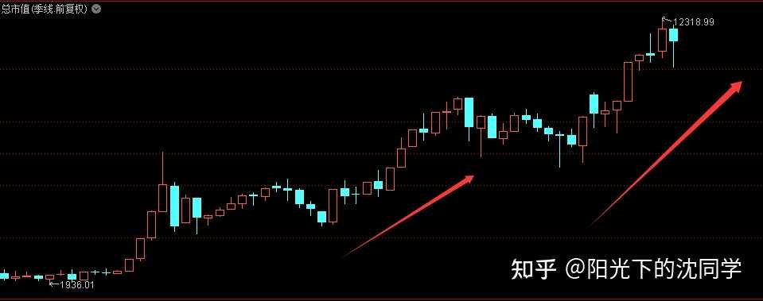
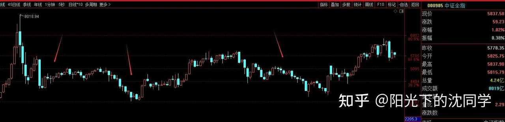
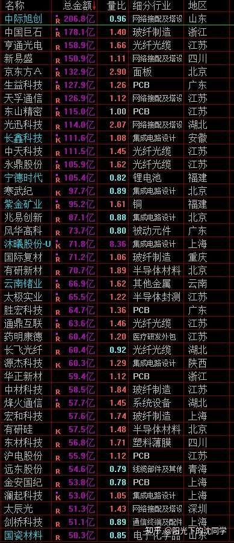
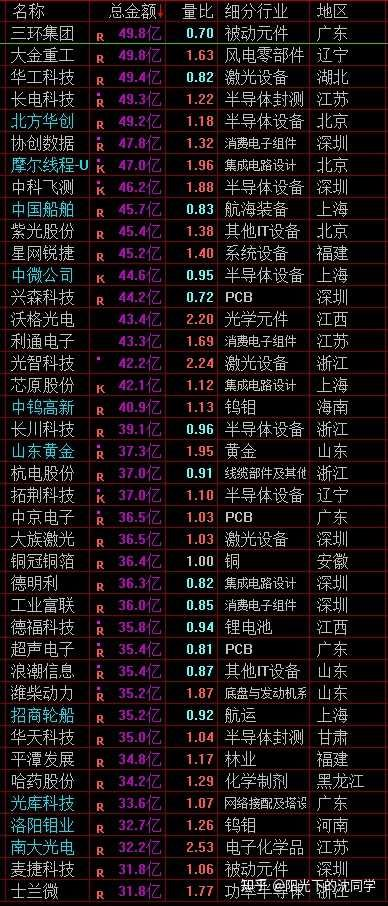
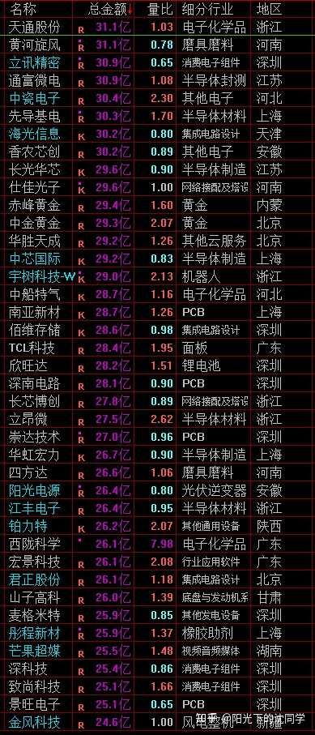

本文的核心逻辑在于通过‘总市值指数’与‘中证全指’的量化对比，揭示市场底部的非同步性。作者指出，总市值指数受IPO扩容影响，其见底往往先于个股表现，且调整幅度在15%-35%之间具有极高的参考价值。市场博弈的本质是资金在不同板块间的轮动，当前科技板块的高权重导致指数波动加剧。作者建议新手放弃‘长期持有’的幻想，转而采取‘熊市空仓+杀跌定投+债券避险’的防御性策略，利用市场情绪低迷时的超跌反弹获取收益，而非在上涨趋势中盲目追高。
我们今天来做一个全面复盘，对市场有一个更清晰的认识，这样对于熬过加息周期会非常有帮助
对于复盘方面知识比较薄弱的投资者，可以收藏一下，后面慢慢研究，以后自己也会做这些复盘
首先我们看总市值指数注【本质逻辑】反映A股整体池子的大小，不仅包含股价涨跌，还包含IPO带来的增量。它比上证指数更能反映市场的真实水位，是判断大周期底部的重要指标。【新手提示】不要只看上证指数，当总市值指数回调15%-30%时，往往是机构开始布局的信号。
这一轮总市值指数从6000多一直涨到1.2万左右，差不多翻倍
上一轮牛市是4000多涨到9000多
时间都在2-3年，但随着总市值越来越大，总市值会比较难每次都翻倍
总市值的变化不仅仅是股价上涨，ipo也算，因为只要总市值提升指数就会提升，这个指数看的是A股整体的市值池子
股市总市值一般会跟着经济发展而且长期越来越大，这个是合理的，ipo越多挤压的股价上涨空间也大，ipo控制的好，股价上涨空间更大
只要经济长期在增长，总市值肯定长期是增长的，所以每次总市值出现了1-2年的调整，基本上都会有一个见底

展示了总市值指数的长期扩张趋势。箭头指向的调整阶段，即是作者强调的15%-35%回调区间，是机构资金进行‘低位配置’的黄金窗口。
但是总市值见底不代表股市见底，上面也聊到了，需要考虑ipo情况
而且要考虑板块情况
这一轮总市值指数翻倍，但依旧很多股票没有比几年前市值增长多少，可能还倒退了
这可以看出来，这一轮总市值的扩张主要在科技，包括现在很多宽基的成分股比例都科技提升很快，核心ipo也是科技
每一次市值的扩张方向都不太一样，但都在总的市值里面
所以总市值指数有时候调整到位了，很多股票并没有调整到位
总市值每一轮调整下跌幅度差不多就是15%-35%，调整到位以后，股市可能继续跌1年，但有些板块不跌了，提前走强，只不过没有反应在指数上面，但总市值是企稳的，板块的内在切换是先于行情启动的
大家未来关注总市值指数，只要高位调整下来15%以上，其实买点就非常多了，而且要意识到会有一批板块会先于指数走强
比如说下一轮牛市核心品种低位白马蓝筹，低位优质企业，他们没办法熊市完全不跌，但比大部分板块，指数提前企稳是合理的
很多时候这种行情的提前筑底，就发生在总市值调整到15%以上之后发生
总市值指数是很难调整40%以上的，除非是超预期股灾，不然基本上15%-30%都可以结束一轮的调整
这种买点来的比较早，很多职业投资者会通过这些方法去提前做仓位配置，新手投资者没有这方面的经验，有时候要等到上证指数大涨很多以后，才意识到牛市开始，这样成本就没有大资金低
大家可以在关注上证指数的同时，多看看总市值指数变化，是有助于提前建仓和布局的
把总市值指数的调整纳入建仓的观察规划里面，胜率很高，把这个实战小技巧分享给大家，一定要认真记一下，好好收藏，不要后面又忘记了
每天原创不易，读者朋友千万不要忘记点赞支持一下
正所谓先赞后看，腰缠万贯
大家可以先点一波赞，我们再继续慢慢聊
祝点赞的朋友福寿无量，天天开心
继续聊
除了总市值指数非常重要之外，中证全指注【本质逻辑】代表A股绝大多数个股的真实波动，波动率远高于上证指数。它跌至筹码下轨时，通常意味着市场情绪已到冰点，是反弹的高胜率区间。【新手提示】若上证指数跌而中证全指不跌，说明市场还没跌透，切忌盲目抄底。也非常重要
这个是综合指数是所有个股的整体表现情况
这一轮行情指数翻倍，上一轮也一样，这个和总市值指数走势差不多

对比中证全指的波动，箭头标注了多次触及筹码下轨后的反弹。这揭示了市场在熊市中‘跌透即反弹’的博弈规律，提醒新手关注极端行情下的反转机会。
中证全指和总市值指数不一样的地方就是他容易跌回去，波动大，因为他比较代表了A股的真实波动
其实就是大部分A股都熊市会跌回之前历史低点
中证全指每次大幅下跌到综合筹码区间注【本质逻辑】基于历史成交密集区划定的价格带，代表了大部分投资者的持仓成本。跌入此区间意味着市场进入了‘磨底’阶段。【新手提示】在此区间内，交易节奏要慢，不要试图一次性满仓，应分批布局。下轨的时候也容易出现反弹
熊市里面的超跌反弹行情，关键就需要综合参考中证全指，他短期跌透了，反弹就确定性高
只看上证指数不一定看的那么准确，未来的下跌行情要做超跌反弹，都需要综合中证全指+上证指数一起来看
比如说上证指数在目前综合筹码区间3950-3650区间杀跌，中证全指也跌出来空间，跌到综合筹码下轨，这种就胜率高
如果只是上证指数跌，中证全指没有跌多少，这种可能就没有跌透，加仓就需要多考虑考虑
加息周期，下跌趋势都是一个漫长的过程，不是一天两天的变化可以诠释的，也不是那么容易结束的
大家千万不要只通过短期走势来考虑最近加息对行情到底有多少影响
整体资金面越来越弱，成交量越来越少，大部分股票反弹一下就新低，大部分都回不去过去高点，赚钱效应越来越差，这些都是走弱的表现，这个过程和周期已经开启了
不会那么容易一下子就调整到位的，多留现金，没有大跌不要加仓，一定要熬住
未来有大跌出现，综合上面聊的方法，结合上证指数和全指，总市值指数来一年做几波超跌反弹行情，这样就很好了
交易节奏一定要慢下来
最适合新手投资者，上班族，股龄10年内投资者的投资策略分享
美股高位震荡，没有买点
黄金这两天波动也非常大，但只能在杀跌的时候定投，拉升起来不要加
红利是分化比较大的，避开高位品种，这个很重要，要优化好红利持仓
债券可以重视，值得闲钱配置，行情不太好的时候债券比个股稳健，熊市配置债券躲避下跌是非常稳妥选择
熊市最好的方法就是不做，留着钱，等待，其他都是次选
因为趋势不太好，很难做，勉强做没意义
你能留得住钱，本金不要亏掉了，自然会有廉价筹码给你买，熊市也会结束，牛市肯定会重新到来，熬不住，熊市把本金都弄没了，那牛市来了也赚不到钱
A股的周期性是非常明显的，是很需要去做这些现金仓位管理的，没办法一直拿着不动，长期复利
这个是A股的特点，反过来想，熊市跌幅大，给到了以后牛市上涨空间
对新手投资者肯定不友好，因为新手投资者很难把握这种波段行情，更加希望的是持仓不动，长期复利
其实就是债券，美股，红利，黄金这种长期才能有这种复利，其他大部分资产都是赚钱了如果不走，大概率都会跌回去
包括大部分指数基金，也只能熊市买入才能赚钱，买贵了一样难赚钱，不是什么指数基金都是纳斯达克和标普500
等未来行情跌幅再大一点，肯定A50，A500，沪深300，上证50这些也会出现捡钱买点，到时候我会专门复盘的时候再通知大家，现在是没有什么机会的，尤其是他们很多成分股大幅调整以后，科技含量很大，未来行情不好的时候下跌幅度会比过去更大，过去他们成分股更传统，更抗跌，现在不一样了，科技含量都大幅提升了，波动会更大，更适合以后熊市发展到比较深邃的阶段再去重启投资
这种指数基金的机会只要有就是捡钱机会，指数基金涨起来就是时间问题，关键是把握买点和估值，仓位控制
未来有交易空间我都会尽可能提醒大家，因为个股做不好很正常，指数基金错过捡钱机会很可惜

提供了明确的估值水位参考。通过将指数划分为‘泡沫、高估、合理、低估’四个区间，为新手提供了量化的操作指南，避免在泡沫期盲目入场。
大家有任何投资疑问，有什么想交流的都可以付费咨询，想单纯支持一下也可以
【在知乎上我的主页咨询即可，没有任何群，不搞私下小圈子】
家庭资产长期稳健配置方案分享，仓位优化，估值分析，行业分析，心态调整，各种投资学习技巧都可以咨询
大家的支持和尊重是我创作的最大动力
感恩大家每天的付费咨询和打赏，感谢大家对知识的尊重，感谢大家对我的支持
欢迎提问
适合职业投资者，10年以上经验老股民，基本功极其扎实投资者的实战分享
继续聊实战
长线持仓我个人还是看好错杀的港股，12月之前恒生科技调整比较大，但跌下来是机会，这方面可以把握把握，杀跌加仓注【本质逻辑】利用市场恐慌情绪导致的非理性抛售，以低于内在价值的价格买入筹码。这是熊市中获取超额收益的唯一途径。【新手提示】严禁在红盘、高开时追涨，那通常是诱多出货，必须在恐慌性杀跌时分批买入。，最近长线持仓我自己加仓也是港股为主，恒生科技比恒生指数便宜
等熬过12月左右，很多错杀的港股会有估值回暖机会，需要提前把握机会
短线账户加仓非常克制，一直没有超过10%持仓，就是杀跌的时候买一定低位科技，低位白马蓝筹，开几个新仓试一试股性，没有大幅去加仓短线博弈
这种行情可以做的空间并不大，每次反弹都是卖出机会，只能是把握3950-3650区间的杀跌稍微加点仓位试一试
千万不要在红盘，拉升，高开的时候加仓，因为整体行情不太好，很容易被套，买贵了一点点都可能很难解套
低位杀跌买的，有时候还能博弈到一些差价
虽然是3950-3650区间，其实杀跌买到的筹码，不需要完完全全等到接近3950再去获利了结，差不多有反弹，有收益就可以先t出来
行情弱就需要降低收益预期，不然每次加仓买了，后面不放掉筹码，仓位越来越高，风险就控制不好
买点依旧只能在每次杀跌中寻找，只做低位科技，远离高位抱团股
总仓位55%以下，闲钱配置债券即可
没有合适看好的方向就休息，千万不要忍不住乱交易



风险提示：股市有风险，入市须谨慎
今天是坚持写复盘笔记的第1526天【每日打卡】
下面是我自己多年来的一些重要的心得感悟，分享给大家，会不定期增加内容
1，
长期投资成功的关键是稳定的情绪和沉稳的性格，这些比过人的天赋更重要
2，
最终我们穷其一生获得的一切经验、知识和所有财富都需要转化为自身的品德修养，不然获得越多失去越多
自身的修养是留住各种财富最好的容器，富裕一时不难，富裕一生不易
珍惜获得的一切，保持初心、慈善、知足，让自己的德行和财富共同成长，才能方得始终
3，
古之成大事者，不惟有超世之才，亦必有坚忍不拔之志
想成为优秀的投资者一定要持之以恒，不断学习，反思，总结，在投资中获得的各种经验最终都会成为你财务自由的砖瓦
4，
再高的智商也一样会被情绪一瞬间冲垮
大部分的亏损都来源于投资者的冲动和情绪化交易，学会控制自己的情绪和心态才能长期稳定的复利
5，
富在术数，不在劳身
一定要多思考，任何时候想清楚了再交易，漫无目的的交易，只会多做多错
6，
利在势居，不在力耕
投资赚钱主要靠把握时机，没有机会就休息，多留现金
做可以让自己心安的投资，便是对于你来说最好的盈利模式
7，
谨记：贪念起，万念俱灰！
控制住了风险，利润会随之而来
富贵险中求，也在险中丢
求时十之一，丢时十之九
美，港，A股长线+短线所有股票持仓投资方向配置比例参考：
金融：10%
消费：31%
生物医药：13%
AI产业链：7%
能源，动力：9%
高端制造：25%
周期：5%
【每3-6个月更新一次】
最新更新时间2026年9月
祝大家在如梦如幻的行情里清醒而自由
仓位情况【不推荐模仿】
短线博弈仓位：6%
长线+短线总仓位尽可能低于55%，这样更符合当前行情的风险程度
长线资产配置目前个人分散持有：各种债券ETF+各种核心红利ETF+美股ETF+黄金+优质REITS+长期看好的优质企业+核心ETF
全文核心逻辑：A股是典型的周期性市场，熊市的核心任务是‘活下去’而非‘赚大钱’。新手应建立‘现金为王’的意识，利用总市值指数和中证全指的量化指标寻找超跌买点。避坑指南：1. 严禁在上涨趋势中追高；2. 熊市中，个股的科技属性越强，波动越大，切勿在下跌初期盲目抄底；3. 债券是熊市最好的避风港，不要为了所谓的‘复利’在下跌趋势中死扛股票。


{kind=link}
{kind=link}
{kind=link}
老沈今天更新这么晚，肯定是因为上涨没有加仓机会
我目前持仓50%左右，感觉不算非常低，所以我还不打算加仓，先买债券，等以后多跌一点再加，这种行情我个人把握不来，拿住钱更舒服
熊市老沈分享的干货确实更多，每天都收藏不过来，学不过来，挺好的，行情差，但可以多学点东西一样不会觉得无聊
每日笔记
1、 美股高位震荡，没有买点
2、 黄金这两天波动也非常大，但只能在杀跌的时候定投，拉升起来不要加
3、 债券可以重视，值得闲钱配置，行情不太好的时候债券比个股稳健，
4、 红利是分化比较大的，避开高位品种，要优化好红利持仓
最近行情宜学习，先苟着。
“等未来行情跌幅再大一点，肯定A50，A500，沪深300，上证50这些也会出现捡钱买点，到时候我会专门复盘的时候再通知大家”……沈同学真是人美心善帅气多金
美联储加息周期开始后，大A黄金股马上选择方向了，贵金属板块20日线已经掉头，30日线再跌一个交易日也要开始掉头。昨天出现了反弹触顶后最大的一个跌幅，今天金价利好高开低走，基本可以确定要调整一段时间，幅度应该不小。之前金价没上涨时抢跑，现在金价在加息预期下继续上涨有压力，下跌又有美债及美元信用问题托底，应该至少要横盘一段时间。感觉主力会借这个机会砸盘做套降低成本，后面黄金股估计只能做超跌反弹了，不过正好是原来操作策略舒适区[捂脸]
所以现在不想买黄金股了，买的是黄金etf